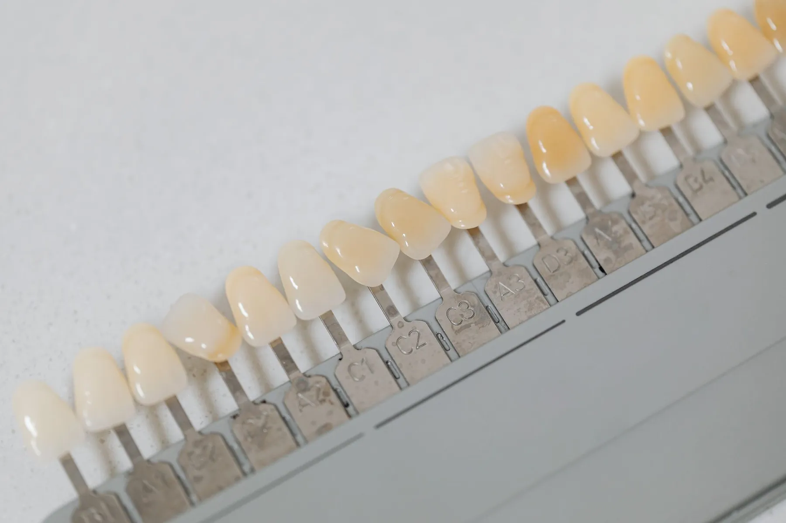

Gülüşünüz için önce konuşalım.
Merkezefendi, 29 Ekim Bulvarı'nda muayenehane. Estetik kron ve günlük diş sağlığı; ilk muayenede ne olacağı baştan anlatılır.

Estetik krondan kontrole.
Genel diş hekimliği başlıkları, kısa açıklamayla. Size uygun olanı muayenede hekiminiz belirler.
Estetik kronlar
Dişin üstünü saran kaplama; renk ve biçim muayenede konuşulur.
Muayene ve kontrol
Ağız ve dişlerin genel değerlendirmesi; gerekirse röntgen.
Dolgu
Çürük ya da kırılma nedeniyle kaybedilen dokunun onarımı.
Kanal tedavisi
Dişin iç dokusunun temizlenip doldurulması.
Diş taşı temizliği
Diş taşı ve plak temizliği, evde bakım önerileri.
Diş eti kontrolü
Kanama ya da hassasiyet şikâyetinde değerlendirme.
İlk randevuda, sırasıyla.
Dört adımda sade bir anlatım. Yayında hekimin kendi akışı yazılır.
- Şikâyetinizi dinler.
Ne zamandır sürdüğü, daha önceki tedaviler, kullandığınız ilaçlar.
- Muayene eder.
Ağız içi muayene; gerek görülürse röntgen istenir.
- Bulguları anlatır.
Neyin acil, neyin bekleyebilir olduğu sade bir dille konuşulur.
- Kararı birlikte verirsiniz.
Seçenekler anlatılır; ne zaman başlanacağına siz karar verirsiniz.
Şikâyetinizi seçin, gerisi hazır.
Seçiminize göre muayeneye yanınızda neyi getirmenizin işe yarayacağını görün; WhatsApp mesajınız da yazılsın.
29 Ekim Bulvarı, Merkezefendi.
- Adres
- M. Akif Ersoy Mah. 29 Ekim Bulvarı No:182/AC
Merkezefendi / Denizli - Telefon / WhatsApp
- 0553 308 51 20
- @dtmeryemozkan